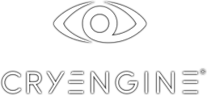

Введение
«Все что существует в реальном мире можно создать в виртуальном, используя правильное сочетание программ и таланта художника».
На сегодняшний день ни один современный фильм и компьютерная игра не обходятся без трехмерной графики. Профессия 3D-художника востребована как никогда. Чтобы начать создавать трехмерную графику, нужно иметь представление об основных инструментах (3D редакторах) и этапах производства (pipeline) 3D моделей.
В отличие от фильма, игра – это интерактивное взаимодействие человека и виртуального мира. Поэтому главные факторы при создании игры:
- интерактивность;
- бесперебойное функционирование;
- и только затем визуальный аспект.
Популярные игровые движки
Игрово́й движо́к (game engine) — базовое программное обеспечение компьютерной игры. Разделение игры и игрового движка часто расплывчато, и не всегда студии проводят чёткую границу между ними. Но в общем случае термин «игровой движок» применяется для того программного обеспечения, которое пригодно для повторного использования и расширения, и тем самым может быть рассмотрено как основание для разработки множества различных игр без существенных изменений. Рынок консолей и мобильных игр растет, а потому найти правильный движок – не такая простая задача, как может показаться. Технологические платформы, которые уже доказали свою эффективность «в полевых условиях», станут очевидными фаворитами многих разработчиков. Тем не менее, рынок изменчив, а потому вопрос выбора движка своей актуальности в ближайшее время не утратит. Ниже представлены несколько наиболее популярных.
Unity 3d

Цена: indie-версия: free, pro-версия: 1500 долларов
Порог вхождения: низкий
Исходный код: закрытый
Самый популярный движок для создания 2D- и 3D-игр. Бесспорно, он стал лидером индустрии, и, как только появляется новая игровая/графическая технология, разработчики незамедлительно реализуют ее в Unity.
Cryengine
Цена: free для некоммерческого использования (изучения и «домашних» разработок)
Порог вхождения: средний
Исходный код: закрытый
CryEngine 3 ориентирован на создание кросс-платформенных игр, предназначенных для PC и консолей. В настоящее время поддерживаются платформы Xbox 360, Xbox One, PlayStation 3–4, WiiU, а также технологии визуализации настольной Windows — DirectX 9–11.
Unreal engine
Цена: free
Порог вхождения: средний
Исходный код: закрытый
Написанный на языке C++, движок позволяет создавать игры для большинства операционных систем и платформ, а также на различных портативных устройствах, например, устройствах Apple, управляемых системой iOS и прочих.
Популярные API
Большую роль при реализации 3-D графики в компьютерных играх играет API.
API (application programming interface - программируемый интерфейс приложений) - это набор готовых классов, функций, процедур, структур и констант. Вся эта информация предоставляется самим приложением (или операционной системой). При этом пользователю не обязательно понимать, что это API технология обеспечивает взаимодействие модулей. Так, пользователи компьютерных игр обычно не подозревают, что это графический API обеспечивает им такую быструю отрисовку картинки и поразительную яркость изображений.
Цель предоставленной информации – использование этих данных при взаимодействии с внешними программами.
Программируемый интерфейс приложений состоит из функций, управляющих 3D конвейером на программном уровне, но при этом может использовать преимущества аппаратной реализации 3D, в случае наличия этой возможности. Если имеется аппаратный ускоритель, API использует его преимущества, если нет, то API работает с оптимальными настройками, рассчитанными на самые обычные системы. Таким образом, благодаря применению API, любое количество программных средств может поддерживаться любым количеством аппаратных 3D ускорителей.
В настоящее время для разработки компьютерных игр популярны следующие API:
Сравнение API
Интерфейсы прикладного программирования долгое время оставались самым консервативным компонентом 3D-графики. Стандарт Direct3D 11 был представлен еще в 2008 году, и до сих пор основная масса новых игр на ПК использует его в качестве основного и в подавляющем большинстве случаев единственного API. Этот островок стабильности в чрезвычайно быстро развивающейся индустрии, какой являются компьютерные игры, образовался отнюдь не из-за традиционализма разработчиков ПО или производителей железа. Напротив, единый стандарт Microsoft дал возможность всем участникам рынка сконцентрировать усилия на своих прямых задачах без необходимости оптимизировать драйверы, архитектуру GPU и игровые движки под несколько API одновременно. Недавние потрясения в этой сфере, связанные с названиями DirectX 12 и Vulkan, вызваны, по сути, усилиями единственной компании — AMD, которая в 2013 году выпустила собственный интерфейс программирования Mantle в сотрудничестве с DICE, автором игровой серии Battlefield. В данный момент работа над Mantle прекращена, но все универсальные API нового поколения заимствовали идеи AMD и преследуют ту же цель — более эффективно использовать вычислительные ресурсы, которые имеются в распоряжении современных GPU.
Несмотря на столь привлекательную идею Direct3D 12 и Vulkan, темп внедрения новых API оставляет желать лучшего даже по сравнению с Direct3D 11, которому потребовался чрезвычайно долгий срок, чтобы целиком переманить разработчиков с Direct3D 9. И все же создатели значительного числа громких и высокобюджетных проектов последних двух лет внедрили поддержку Direct3D 12 или Vulkan по крайней мере в виде экспериментальной или побочной функции. В конце концов, методика тестирования GPU на 3DNews уже по большей части состоит из игр с поддержкой этих API. Подходящее время для того, чтобы провести исследование и сделать промежуточные выводы о том, насколько в действительности полезны DirectX 12 и Vulkan для производительности современного железа.
Игра The Talos Principle разрабатывалась компанией Croteam, которая и в прошлом была известна поддержкой многих графических API. И в последней итерации игра The Talos Principle не стала исключением – она поддерживает DirectX 9, DirectX 11, OpenGL и Vulkan.
{kind=link}
Как можно видеть по результатам, API Vulkan дает существенный прирост по сравнению с OpenGL. Но до производительности DirectX 11 новый API не дотягивает. Тому есть несколько причин. С одной стороны, разработка под Vulkan находится в ранней стадии. Это касается и самого API, и драйвера, и игры The Talos Principle. По сравнению с OpenGL новый интерфейс позволяет освободить часть ресурсов и избежать «узких мест». Но DirectX много лет совершенствовался до текущего уровня. В любом случае, потенциал у API Vulkan очень хороший. Если погрузиться в детали, то визуальных отличий между API Vulkan и DirectX 11 практически нет. Так что путь рендеринга очень хорошо адаптирован. У текущей реализации The Talos Principle видеокарты с 2 Гбайт памяти получают падение производительности, вероятно, из-за не самой эффективной работы с памятью. Как и Mantle и DirectX 12, API Vulkan может обращаться к ресурсам памяти на более глубоком уровне – сей факт можно рассматривать как преимущество, но он может стать и недостатком, если разработчики не смогут эффективно использовать память.